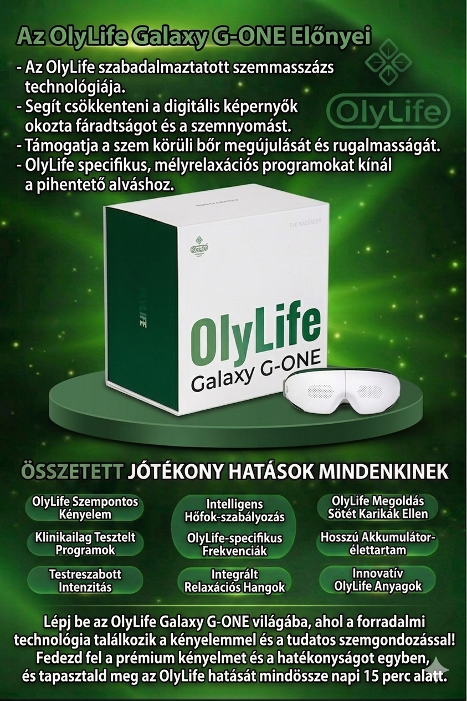
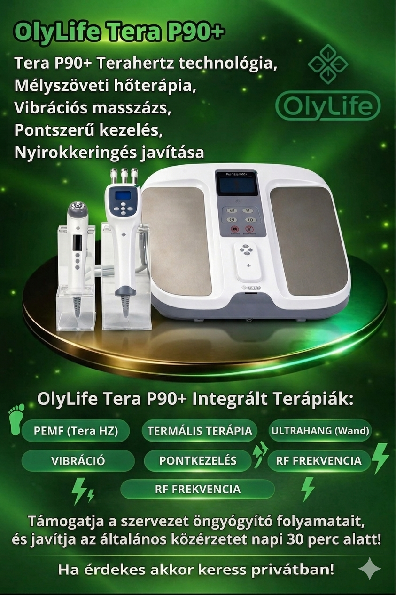
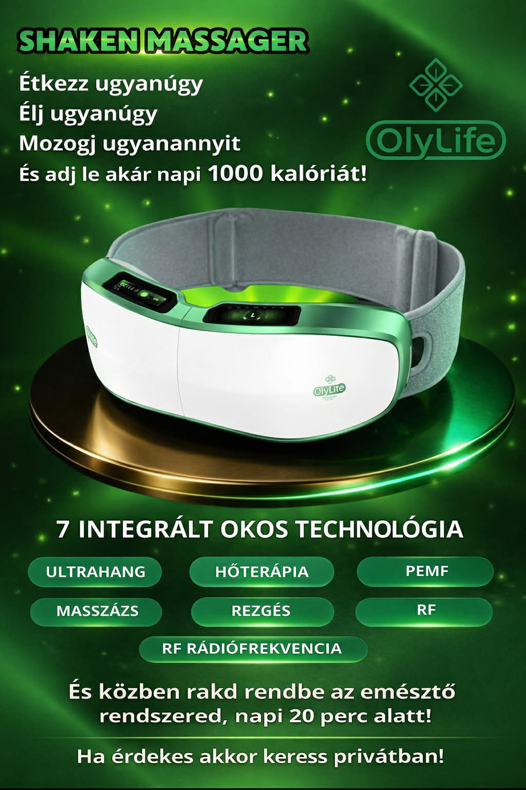
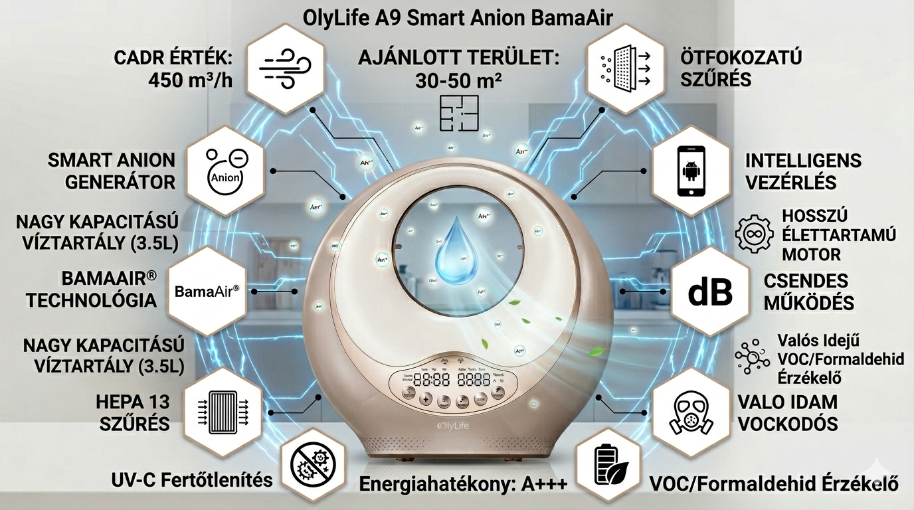
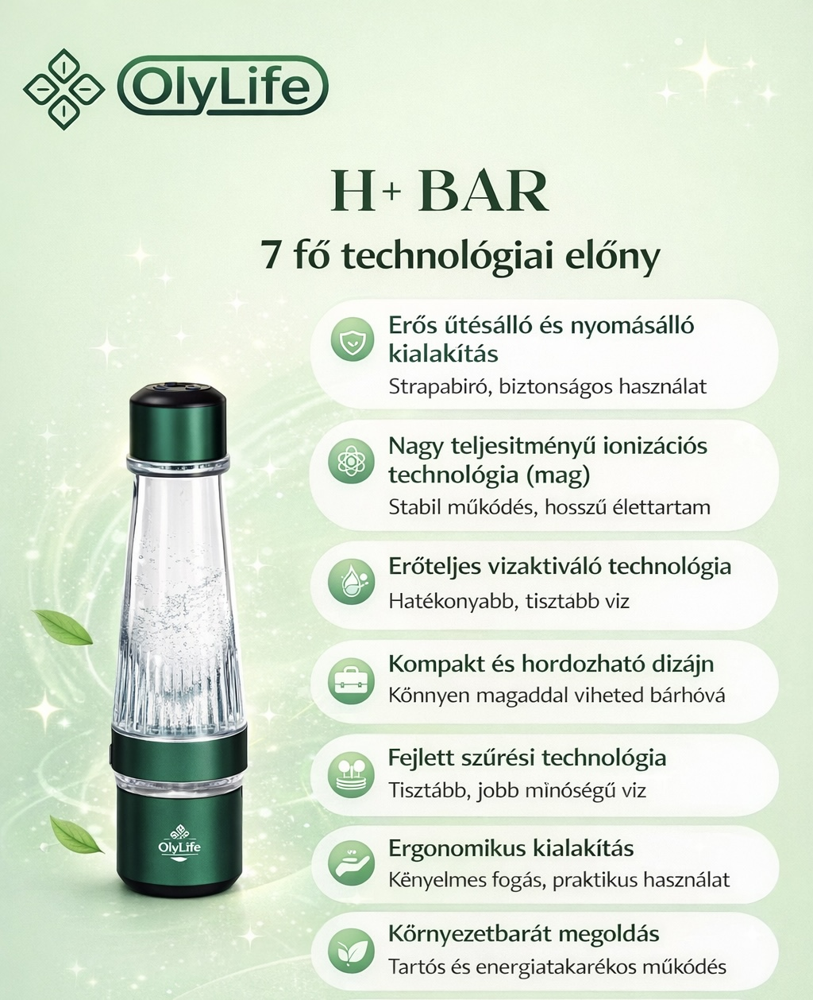
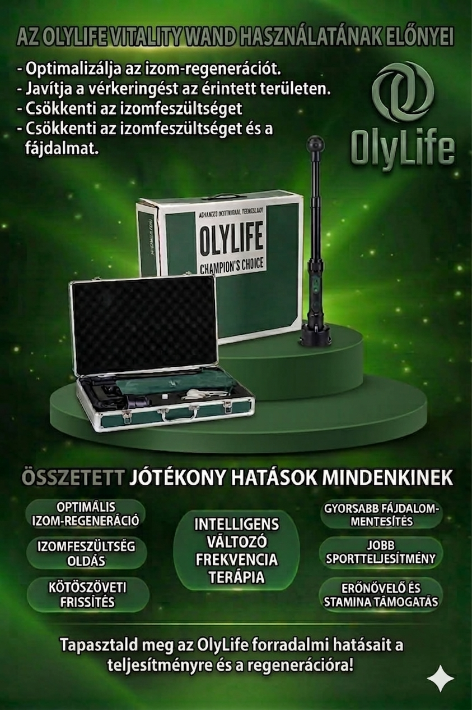

Termékek

Galaxy G-ONE
Szemmasszírozó készülék, amely segíthet csökkenteni a digitális fáradtságot, és támogatja a relaxációt. Kényelmes, hordozható megoldás mindennapi használatra.

Tera P90+
Komplex készülék többféle technológiával, mint hőterápia és vibrációs masszázs. Célja a közérzet javítása és a relaxáció támogatása.

Shaken Massager
Modern masszírozó eszköz több funkcióval, amely segíthet az izmok ellazításában és a komfortérzet növelésében.

A9 Smart Légtisztitó
Kompakt otthoni légtisztító, amely akár 200 millió negatív ionnal és beépített hangulatvilágítással gondoskodik a friss, stresszmentes környezetről.

H+Bar
Intelligens hidrogénes vízpalack, amely bármilyen italból percek alatt antioxidáns hatású, molekuláris hidrogénnel dúsított funkcionális vizet készít.

Spring Water Pro
Többfokozatú szűrési és ásványianyag-visszapótló rendszer, amely azonnali hűtéssel és melegítéssel, valamint antioxidáns hidrogénnel dúsítva biztosítja a tiszta, természetes forrásvíz minőséget.

Vitality Wand
Kézi, nem invazív wellness eszköz, amely terahertz- és PEMF ultrahosszú hullámokat kombinál állítható hőmérséklettel és légáramlással a fáradtság oldása, a mikrokeringés támogatása és a mélyszöveti regeneráció elősegítése érdekében.
Miért válaszd?
✔ Modern technológia
✔ Egyszerű használat
✔ Stílusos megjelenés
✔ Mindennapi kényelem
Kapcsolat
Email: nemoz75@gmail.com
Telefon: +36 30 438 3138